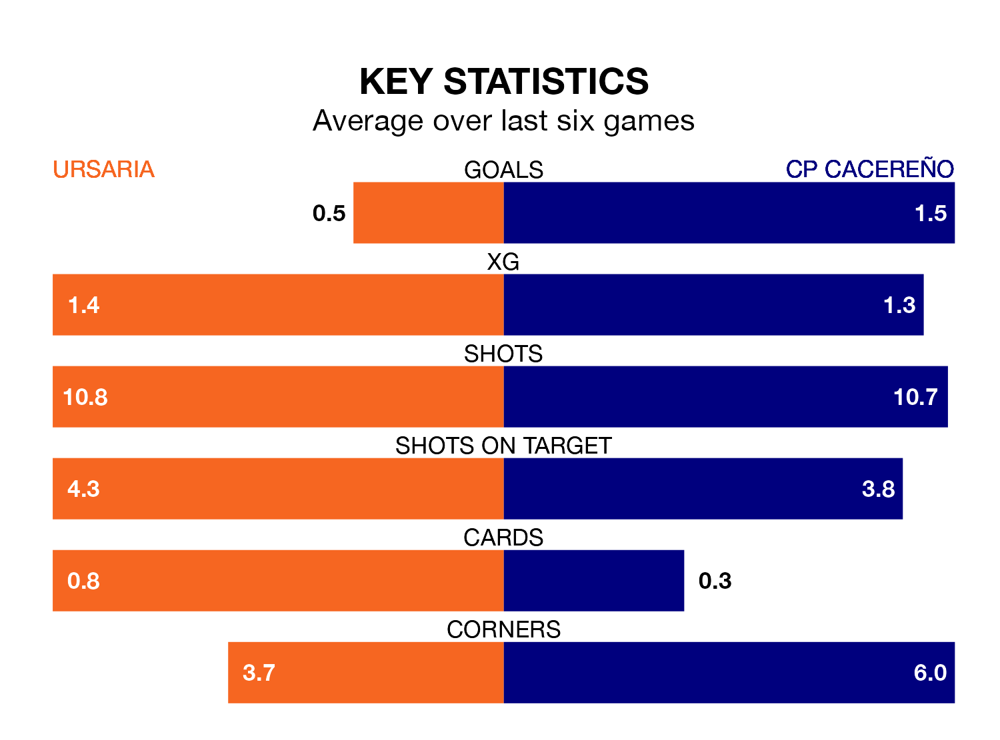

CP Cacereño face Ursaria on Sunday seeking to protect their long unbeaten run in the Segunda División RFEF Group 5.
CP Cacereño are unbeaten in six, with two wins and four draws, ahead of the 11am kick-off.
They face an Ursaria team who have won just one and drawn one over the same number of games.
With 23 goals in 25 games so far this season, Ursaria are scoring at below the league average rate with 0.9 goals per game. And they are conceding more than average, letting in 31 goals at a rate of 1.2 per game.
CP Cacereño, meanwhile, are above average scorers, with 1.2 goals per game, compared to a league average of 1.1. They have also conceded 1.2 goals per game.
The home team are 13th in the table after 25 games, of which they have won seven and drawn eight, earning 29 points.
The visitors are three places ahead of Ursaria in 10th, with eight wins and 10 draws putting them on 34 points.
Ursaria's last match was on Sunday, a 3-0 loss against Talavera CF.
CP Cacereño beat UD San Fernando 2-0 last time out, also on March 3, with Emiliano Hernández Moreno and Ivan Breñé Bravo on the scoresheet.
Updated: 09:34 (UTC), 08/03/24